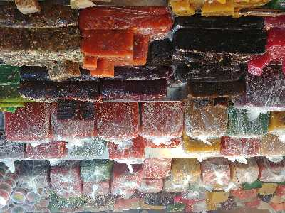

MITHAI THERAVU
A popular hub to gorge on sweet delectables, the Sweet Street is one of the busiest place to shop in Kozhikode. It remains open till 9 in the night

KOZHIPPARA FALLS
Providing a stunning sight, these falls are best known for its swimming, bird watching and jungle trekking. Also known as Kakkadampoyil Waterfall,

BACKWATERS
Spread across long stretches of the Arabian water, these beguiling backwater lagoons are a sight to withhold. However, they are well known for its cruises on houseboats which offer an enthralling experience.

THUSHARAGIRI FALLS
Lying in the Western Ghats of Kozhikode district in Kerala, Thusharagiri Fall cascades down as three waterfalls. Located in a small tribal village